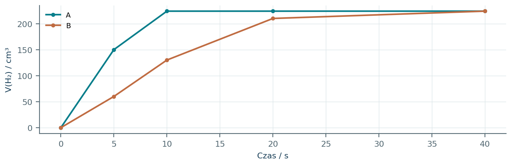
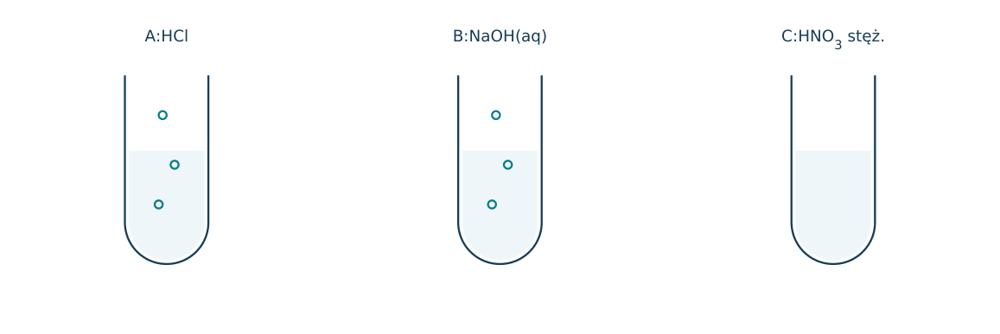
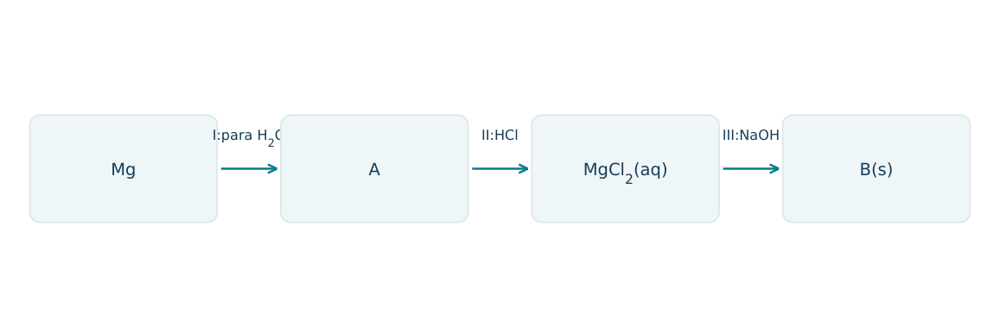
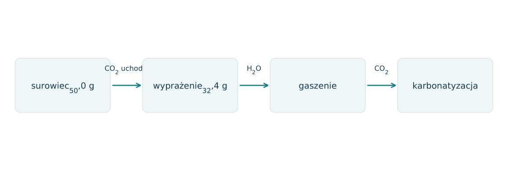
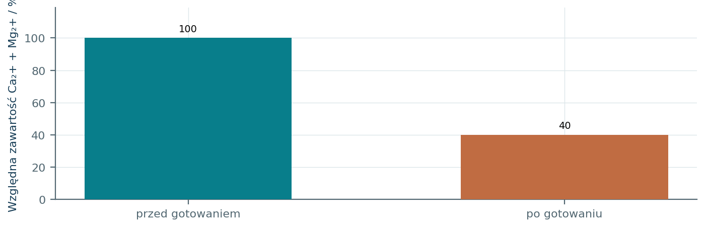
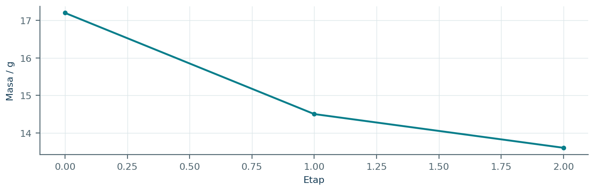
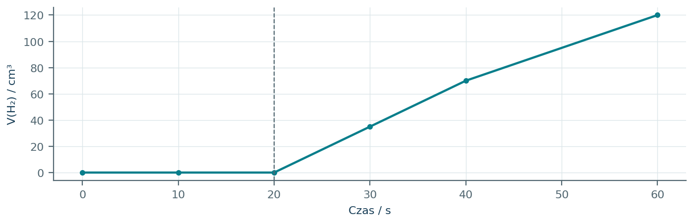
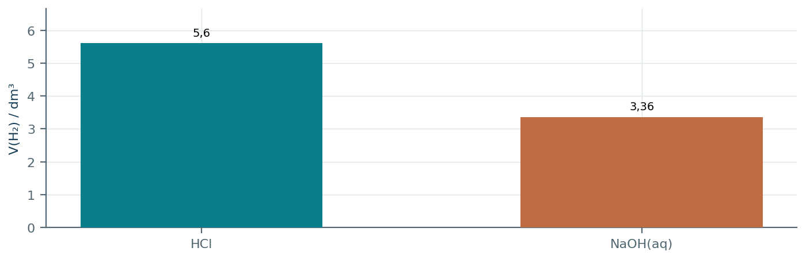
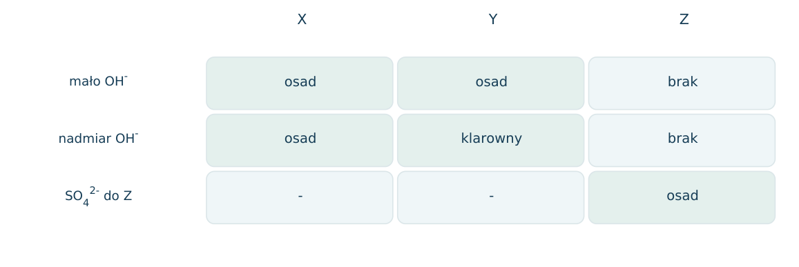
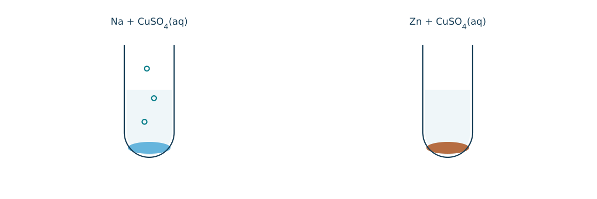

12.01 · 1 pkt
Dlaczego Na i K tworzą zwykle kationy o ładunku +1?
Rozwiązanie
- Mają po jednym elektronie walencyjnym ns1; jego oddanie daje konfigurację gazu szlachetnego.
50 zadań · 111 pkt · odpowiedzi rozwijane po samodzielnej próbie
← KatalogZadania PDFRozwiązania PDFDane do obliczeń: H 1; C 12; N 14; O 16; Na 23; Mg 24; Al 27; P 31; S 32; Cl 35,5; K 39; Ca 40; Cr 52; Mn 55; Fe 56; Cu 64; Zn 65; Ag 108; Br 80; I 127; Ba 137 (g/mol). NA = 6,02·1023 mol-1. Vm = 22,4 dm3/mol w warunkach normalnych (0°C, 1013 hPa). W 25°C Kw = 10-14. Dane podane w zadaniu mają pierwszeństwo.
Dlaczego Na i K tworzą zwykle kationy o ładunku +1?
Oceń zdania A i B, wpisując P albo F. Każde zdanie fałszywe popraw lub krótko uzasadnij. A: Zarysowany ocynk może nadal chronić stal elektrochemicznie. B: Glin zawsze szybko koroduje w powietrzu, bo łatwo się utlenia.
Dlaczego Ca tworzy jon Ca2+, a nie typowo Ca+ w solach?
Wyjaśnij przewodnictwo i kowalność glinu na podstawie rodzaju wiązania.
Napisz równanie reakcji: Na z wodą. Podaj obserwację.
Napisz równanie reakcji: Ca z wodą. Podaj obserwację.
Napisz równanie reakcji: Mg z parą wodną w wysokiej temperaturze. Podaj obserwację.
Napisz równanie reakcji: Mg z HCl. Podaj obserwację.
Napisz równanie reakcji: Al po usunięciu warstwy tlenkowej z HCl. Podaj obserwację.
Napisz równanie reakcji: Al z nadmiarem NaOH(aq) i wodą. Podaj obserwację.
Napisz równanie reakcji: AlCl3 z niewielką ilością NaOH. Podaj obserwację.
Napisz równanie reakcji: Ca(OH)2 z ograniczoną ilością CO2. Podaj obserwację.
Napisz równanie reakcji: CaCO3 z CO2 i wodą. Podaj obserwację.
Napisz równanie reakcji: Ca(HCO3)2 podczas gotowania. Podaj obserwację.
Co to jest pasywacja glinu i dlaczego ogranicza reakcję z otoczeniem?
Przewidź zachowanie Al w zimnym stężonym HNO3.
Jak rozróżnić kawałki Mg i Al za pomocą NaOH(aq)? Podaj wynik w typowych warunkach szkolnych.
Wymień wspólny główny składnik wapienia, kredy i marmuru oraz odczynnik do jego wykrywania.
Napisz równanie gaszenia wapna i nazwij produkt.
Napisz równanie wiązania zaprawy wapiennej z CO2.
Wyjaśnij przyczynę twardości przemijającej wody.
Czy gotowanie usuwa każdy rodzaj twardości wody? Uzasadnij.
Napisz równanie strącania Ca2+ zmiękczającego wodę po dodaniu Na2CO3.
Podaj wzory gipsu krystalicznego, gipsu palonego i bezwodnego siarczanu(VI) wapnia.
Napisz równanie twardnienia gipsu palonego i określ rolę wody.
Ile gramów CaO otrzyma się z 50,0 g czystego CaCO3 przy wydajności 90%?
Ile dm3 H2 w warunkach normalnych otrzyma się z 2,7 g Al i nadmiaru HCl?
Do wody dodano 0,46 g Na. Oblicz n(NaOH) i V(H2) w warunkach normalnych.
W 1,00 dm3 wody jest 0,0020 mola Ca(HCO3)2. Oblicz masę CaCO3 możliwego do wytrącenia przy całkowitym usunięciu twardości przemijającej.
Ile gramów wody traci 17,2 g CaSO4·2H2O przy całkowitym odwodnieniu do CaSO4?
Ile gramów wody potrzeba stechiometrycznie do związania 29,0 g gipsu palonego 2CaSO4·H2O? M tej jednostki=290 g/mol.
Biały osad po dodaniu NaOH do soli X rozpuszcza się w nadmiarze zasady. Czy to wystarcza, by bez innych danych rozpoznać Al3+? Uzasadnij.
Po spaleniu 2,4 g Mg otrzymano 4,0 g białego produktu. Ustal wzór produktu z danych masowych.
Dlaczego Al może być reaktywny w szeregu elektrochemicznym, a jednocześnie odporny na korozję atmosferyczną?
W wodzie wapiennej początkowo pojawia się osad, który znika po długim przepuszczaniu CO2. Zapisz wyjaśnienie obu etapów.
Próbka 10,0 g zawiera CaCO3 i SiO2. Z HCl wydziela 1,12 dm3 CO2 w warunkach normalnych. Oblicz udziały masowe składników.
Uczeń próbuje przechowywać roztwór NaOH w naczyniu aluminiowym. Wyjaśnij, jaki proces może zajść i wskaż gaz.
Podano: minerał A z HCl wydziela CO2, minerał B traci wodę przy ogrzewaniu, minerał C zawiera sieciowy SiO2. Podaj przykłady A, B i C.
Dlaczego usuwanie Ca2+ z wody ogranicza osadzanie kamienia i zużycie mydła? Podaj dwa odrębne wyjaśnienia.
Dlaczego wrzucenie Na do wodnego CuSO4 nie jest prostym sposobem otrzymywania miedzi przez wypieranie? Wskaż dominującą reakcję i możliwy osad.
Każdy numer 41-50 oznacza jedno zadanie główne; podpunkty są oceniane osobno.
W osobnych próbach z wodą reagowały 0,460 g Na i 0,780 g K. Podane masy odpowiadają tej samej liczbie moli. Wykresy pokazują gaz po przeliczeniu na warunki normalne, przy jednakowym końcowym stopniu przereagowania.

12.41.1 (2 pkt) Przypisz Na i K do krzywych i wyjaśnij trend reaktywności w grupie.
12.41.2 (1 pkt) Oblicz teoretyczną objętość gazu i n(OH-) dla każdej próby.
12.41.3 (1 pkt) Dlaczego większa szybkość nie oznacza w tej sytuacji większej objętości końcowej H2?
A=K, B=Na; K łatwiej oddaje elektron walencyjny i zwykle reaguje szybciej.
n metalu=0,0200 mol; nH2=0,0100, V=224 cm3; nOH-=0,0200 mol.
Końcowa objętość wynika z tej samej liczby moli metalu i stechiometrii, nie z tempa reakcji.
Porównano próbki Al po usunięciu warstwy powierzchniowej: A w HCl, B w nadmiarze NaOH(aq), C w zimnym stężonym HNO3. W A i B wydziela się H2; w C po początkowym kontakcie reakcja zostaje zahamowana.

12.42.1 (2 pkt) Napisz równania reakcji A i B, w B przyjmij [Al(OH)4]-.
12.42.2 (1 pkt) Nazwij zjawisko w C i wyjaśnij mechanizm ochrony.
12.42.3 (1 pkt) Ile moli H2 i minimalnie NaOH wymaga 0,270 g Al w B?
2Al+6HCl→2AlCl3+3H2; 2Al+2NaOH+6H2O→2Na[Al(OH)4]+3H2.
Pasywacja: zwarta warstwa powierzchniowa ogranicza dostęp reagentów.
nAl=0,0100; nH2=0,0150; nNaOH=0,0100 mol.
Schemat łączy metal, tlenek, sól oraz osad. W etapie I Mg reaguje z parą wodną w wysokiej temperaturze, w II z HCl, w III z NaOH. Zidentyfikuj produkty i śledź stopień utlenienia metalu.

12.43.1 (2 pkt) Ustal A i B i napisz równania etapów I-III.
12.43.2 (1 pkt) Wskaż, który etap jest reakcją redoks, i uzasadnij.
12.43.3 (1 pkt) Oblicz masę B z 0,240 g Mg przy ilościowym przebiegu wszystkich etapów, M(B)=58.
A=MgO, B=Mg(OH)2; Mg+H2O(g)→MgO+H2; MgO+2HCl→MgCl2+H2O; MgCl2+2NaOH→Mg(OH)2+2NaCl.
I: Mg0→+II, H+I→0; II i III nie zmieniają stopni utlenienia.
nMg=0,0100 mol; mB=0,580 g.
50,0 g surowca CaCO3 z obojętną domieszką wyprażono do stałej masy 32,4 g. CaCO3 całkowicie się rozłożył, a domieszka nie zmieniła masy. Następnie przeprowadzono gaszenie i karbonatyzację, rozpatrując suche produkty stałe.

12.44.1 (2 pkt) Oblicz zawartość CaCO3 w surowcu.
12.44.2 (1 pkt) Zapisz reakcje rozkładu, gaszenia i karbonatyzacji.
12.44.3 (1 pkt) Oblicz masę suchego ciała stałego po gaszeniu, uwzględniając domieszkę.
mCO2=17,6 g, n=0,400 mol, mCaCO3=40,0 g; udział 80,0%.
CaCO3→CaO+CO2; CaO+H2O→Ca(OH)2; Ca(OH)2+CO2→CaCO3+H2O.
0,400·74+10,0=39,6 g.
Informacja: odczynnik EDTA wiąże łącznie Ca2+ i Mg2+ w stosunku 1: 1. Na 50,0 cm3 wody zużyto 10,0 cm3 EDTA0,0100 mol/dm3. Po gotowaniu i oddzieleniu osadu sygnał spadł do 40% początkowej wartości.

12.45.1 (2 pkt) Oblicz sumaryczne stężenie Ca2++Mg2+ przed gotowaniem.
12.45.2 (1 pkt) Wyraź twardość jako mg CaCO3/dm3, M(CaCO3)=100 g/mol.
12.45.3 (1 pkt) Jaki procent twardości usunięto i dlaczego gotowanie nie musi usuwać całości?
n=0,000100 mol; csum=0,00200 mol/dm3.
0,00200·100=0,200 g/dm3=200 mg/dm3.
60%; gotowanie usuwa głównie twardość przemijającą z wodorowęglanów, nie każdą rozpuszczoną sól Ca i Mg.
Ogrzewano 17,20 g CaSO4·2H2O. Wykres pokazuje masy odpowiadające dwuwodnej, półwodnej i bezwodnej soli. Nie zachodzi rozkład siarczanu(VI). M(CaSO4)=136 g/mol.

12.46.1 (2 pkt) Oblicz ilość wody traconej w każdym etapie.
12.46.2 (1 pkt) Napisz wzór środkowego produktu i równanie jego twardnienia.
12.46.3 (1 pkt) Ile wody potrzeba stechiometrycznie do odtworzenia całej początkowej masy gipsu ze środkowego produktu?
17,20→14,50: 2,70 g=0,150 mol; 14,50→13,60: 0,900 g=0,0500 mol.
CaSO4·0,5H2O; (CaSO4)2·H2O+3H2O→2(CaSO4·2H2O).
2,70 g wody.
Reakcję Al z HCl obserwowano przed i po mechanicznym naruszeniu warstwy tlenkowej. Wykres pokazuje objętość H2; kreska pionowa oznacza naruszenie powłoki. Ilość kwasu przez cały czas pozostaje nadmiarowa.

12.47.1 (2 pkt) Wyjaśnij opóźnienie reakcji i jej przyspieszenie po 20 s.
12.47.2 (1 pkt) Napisz reakcję rozpuszczania warstwy Al2O3 w HCl.
12.47.3 (1 pkt) Czy powolna reakcja początkowa dowodzi małej skłonności termodynamicznej Al do utleniania?
Warstwa Al2O3 ogranicza kontakt metalu z kwasem; jej naruszenie odsłania reaktywny Al.
Al2O3+6HCl→2AlCl3+3H2O.
Nie; warstwa jest barierą kinetyczną, mimo dużej skłonności metalu do utleniania.
Dwie jednakowe próbki mieszaniny Al i Mg po 5,10 g badano oddzielnie. Z HCl wydzieliło się 5,60 dm3 H2, z nadmiarem NaOH(aq)3,36 dm3. W zasadowej próbie reaguje tylko Al; objętości w warunkach normalnych.

12.48.1 (2 pkt) Wyznacz n(Al) z próby zasadowej.
12.48.2 (2 pkt) Oblicz n(Mg) i procenty masowe składników.
12.48.3 (1 pkt) Wyjaśnij, dlaczego samo równanie z HCl i objętość gazu bez masy próbki nie wystarczyłyby do wyznaczenia obu ilości.
nH2=3,36/22,4=0,150 mol; nAl=(2/3)·0,150=0,100 mol.
Całkowite nH2=0,250 mol, z Mg: 0,100 mol; m(Al)=2,70 g, m(Mg)=2,40 g; 52,94%Al i 47,06%Mg.
Oba metale wydzielają H2, dając jedno równanie na dwie niewiadome; potrzebne dodatkowe niezależne dane.
Roztwory X, Y, Z zawierają jeden z kationów Mg2+, Al3+, Ba2+. Po małym dodatku NaOH: X i Y dały białe osady, Z nie. W nadmiarze NaOH osad Y zniknął, X pozostał. Z daje biały osad z SO42-.

12.49.1 (2 pkt) Ustal kationy i wyjaśnij rozpuszczanie osadu Y.
12.49.2 (2 pkt) Napisz jonowe równanie potwierdzające Z i rozpuszczanie osadu Y.
12.49.3 (1 pkt) Czy brak osadu z OH- dowodzi braku kationów w Z?
X=Mg2+, Y=Al3+, Z=Ba2+; Al(OH)3 jest amfoteryczny i tworzy hydroksokompleks.
Ba2++SO42-→BaSO4(s); Al(OH)3+OH-→[Al(OH)4]-.
Nie; Ba(OH)2 jest rozpuszczalny w użytych warunkach, a osad z SO42- potwierdza obecność Ba2+.
Do oddzielnych porcji 100 cm3 CuSO4 0,100 mol/dm3 wprowadzono 0,460 g Na albo 0,650 g Zn. W próbie Na powstał niebieski osad i gaz, w Zn czerwonobrunatny metal. Pomiń straty i reakcje uboczne poza reakcją Na z wodą.

12.50.1 (2 pkt) Napisz reakcje wyjaśniające wynik z Na, uwzględniając wodę.
12.50.2 (2 pkt) Oblicz ilość gazu w próbie Na i masę metalu w próbie Zn.
12.50.3 (1 pkt) Dlaczego prosty zapis 2Na+Cu2+→2Na++Cu nie opisuje zaobserwowanej próby wodnej?
2Na+2H2O→2NaOH+H2; Cu2++2OH-→Cu(OH)2(s).
nH2=0,0100 mol, V=224 cm3; Zn+Cu2+→Zn2++Cu, n(Cu)=0,0100 mol, m=0,640 g.
Dominująca reakcja Na z wodą wytwarza H2 i OH-, który strąca wodorotlenek; obserwowany produkt nie jest Cu metaliczną.